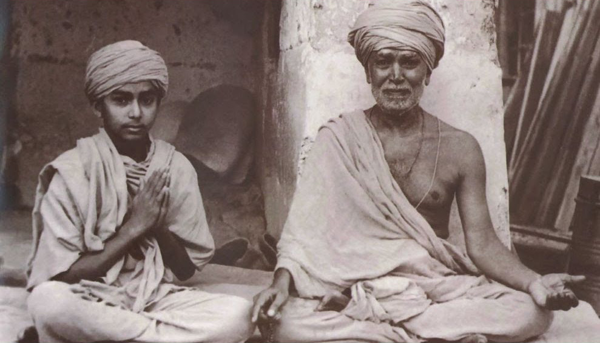

Key Information
Mandir Address: 1 Carnegie Plaza, Cherry Hill, NJ Dates: December 30th, 2016 - January 1st, 2017
Pratigna
Pramukh Swami's Pratigna
"On this auspicious day, I pray from my heart to Guruhari, that whatever strength,
knowledge, inspiration I have has been given by you. Until now my life as a
renunciate has passed in your compassionate service. Now, you have commanded
me to serve in this tremendous seva, for which grant me fully the capability and
strength. And may also all your disciples be happy in mind, body and wealth; let
them be unassailed by any unhappiness or hardship in this world and worshipping
Shriji Maharaj at the last, reside in Akshardham. I ask blessings for this. Also, if
even unknowingly someone utters the name of Akshar Purushottam Maharaj,
grant him Akshardham through your miraculous greatness.”
"Today, before you, Gurushri, and before this assembly I take an oath that I will
fully carry out my duties to this Sanstha of yours, without caring for this body, I will
remain sincere and be fulfilled. You have cultivated this garden - knowledge of
Akshar Purushottam – every day I will persevere and care that it flowers in every
way; I will serve, and wish for the blessings of the entire fellowship, grant me this. I
ask that in all my duties for the good of Satsang, Pujya Yogi Maharaj, sadgurus,
senior sadhus, parshads and all disciples I appeal to with pure heart that all of you
give me your full co-operation, so I may be strengthened to perform this
tremendous service.”
Read the Primer
BAPS Cherry Hill
Located in Southern Jersey, the BAPS Cherry Hill Mandir is a unique and special mandir apart of the Northeast. To learn more about the mandir click the button below!